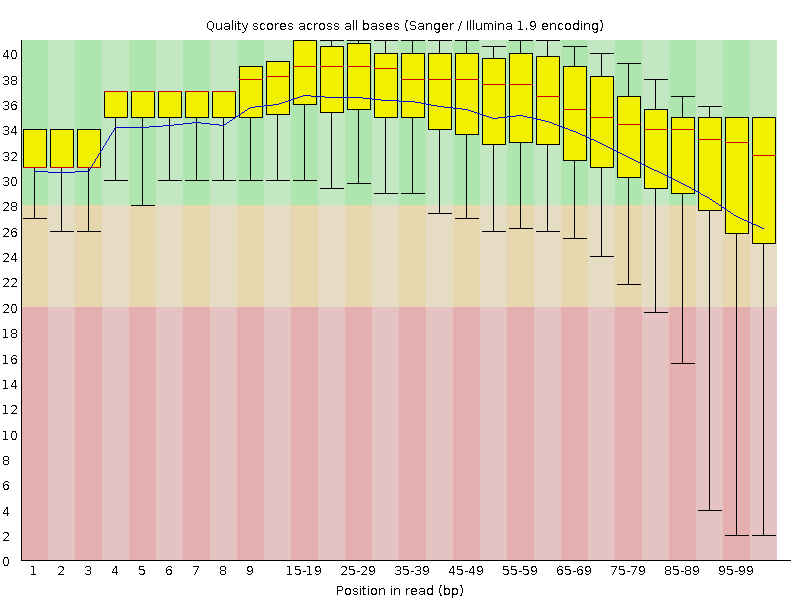
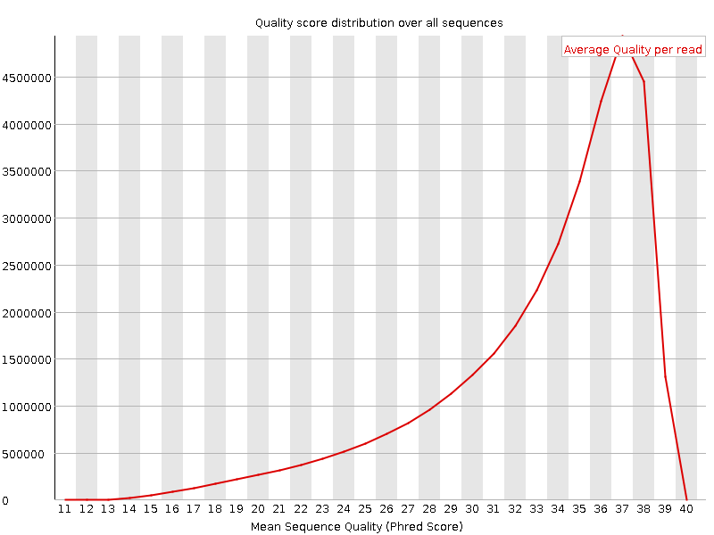
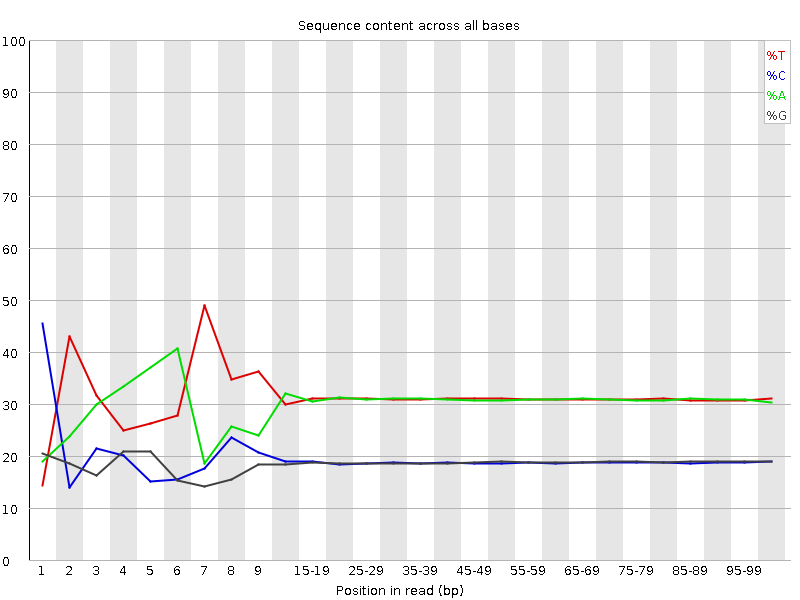
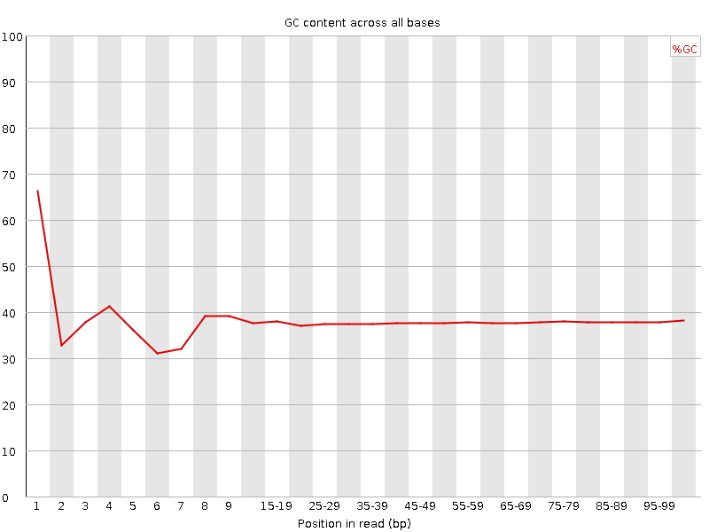
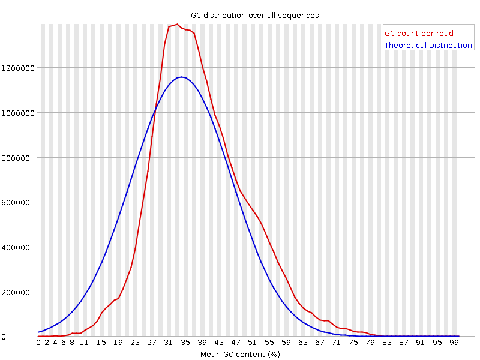
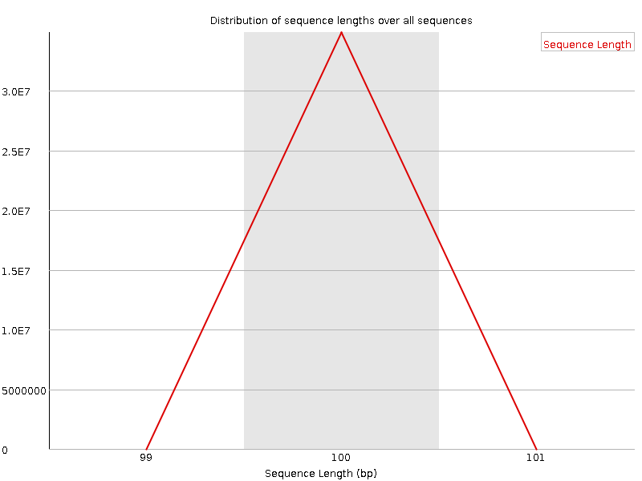
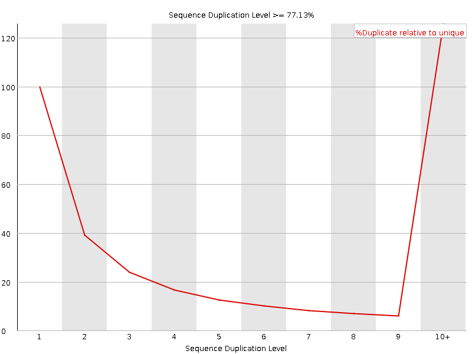
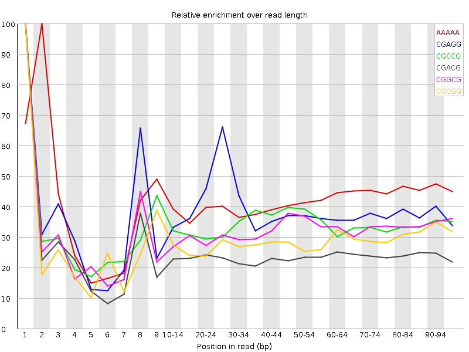

![[OK]](Icons/tick.png) Basic Statistics
Basic Statistics
| Measure | Value |
|---|---|
| Filename | t6_2.fq |
| File type | Conventional base calls |
| Encoding | Sanger / Illumina 1.9 |
| Total Sequences | 34883306 |
| Filtered Sequences | 0 |
| Sequence length | 100 |
| %GC | 37 |
Per base sequence quality

Per sequence quality scores

![[FAIL]](Icons/error.png) Per base sequence content
Per base sequence content

Per base GC content

Per sequence GC content

Per base N content

Sequence Length Distribution

Sequence Duplication Levels

![[WARN]](Icons/warning.png) Overrepresented sequences
Overrepresented sequences
| Sequence | Count | Percentage | Possible Source |
|---|---|---|---|
| CTAATTTTCATCTTAATTCAACATCGAGGTCGCAAACATCTTTATCTATA | 82326 | 0.23600400718899753 | No Hit |
| CTTTCGTACAATTAATTAATATTTTATTATAGATAGAAACCAATCTGACT | 65403 | 0.18749083014092757 | No Hit |
Kmer Content

| Sequence | Count | Obs/Exp Overall | Obs/Exp Max | Max Obs/Exp Position |
|---|---|---|---|---|
| AAAAA | 21705495 | 2.3208504 | 5.5366545 | 2 |
| CGAGG | 2806585 | 2.1201963 | 5.4560394 | 1 |
| CGCCG | 1708715 | 2.0463414 | 5.9830513 | 1 |
| CGACG | 2643960 | 1.9656161 | 8.19005 | 1 |
| CGGCG | 1530835 | 1.8629056 | 5.7524724 | 1 |
| CGCGG | 1445215 | 1.7587129 | 6.1119285 | 1 |
| CTTCT | 6401790 | 1.7240915 | 5.405007 | 1 |
| CTCGA | 3751250 | 1.6868845 | 9.042352 | 1 |
| CTGGA | 3577825 | 1.6348673 | 7.157978 | 1 |
| CGCGA | 2126795 | 1.5811368 | 6.0712223 | 1 |
| CTTCC | 3577145 | 1.567386 | 5.4978714 | 1 |
| CGAGA | 3383040 | 1.5613 | 5.3978195 | 1 |
| CTCCA | 3514060 | 1.555122 | 7.71712 | 1 |
| ATCGA | 5460985 | 1.5244588 | 5.1558175 | 6 |
| CGATC | 3382070 | 1.5208695 | 5.1691756 | 4 |
| CAAAA | 8750850 | 1.5072744 | 5.136462 | 1 |
| CCGGC | 1253790 | 1.5015277 | 5.5090785 | 1 |
| CTTTT | 9002000 | 1.4901067 | 6.6631804 | 1 |
| CGCCA | 2029035 | 1.4844973 | 5.8014016 | 1 |
| CTTTC | 5354890 | 1.4421468 | 7.082454 | 1 |
| CTCGT | 3233710 | 1.4397746 | 7.7845554 | 1 |
| CTTCG | 3215775 | 1.4317893 | 6.7659554 | 1 |
| CTGGC | 1943940 | 1.4309052 | 5.333331 | 1 |
| CGAAG | 3078060 | 1.4205494 | 5.351043 | 1 |
| CTTCA | 5130190 | 1.3954308 | 5.925173 | 1 |
| CTCGG | 1885790 | 1.3881019 | 8.580153 | 1 |
| CTCGC | 1904350 | 1.3794969 | 6.8673882 | 1 |
| CTCCT | 3086210 | 1.3522747 | 5.3980527 | 1 |
| CTTGG | 2724105 | 1.2324556 | 6.0030217 | 1 |
| CGAAA | 4356410 | 1.2282573 | 5.342344 | 1 |
| CTTTG | 4446755 | 1.2169034 | 6.2253065 | 1 |
| CTTGA | 4205180 | 1.1622871 | 5.3043113 | 1 |
| CTCCG | 1389065 | 1.0062283 | 5.153863 | 1 |